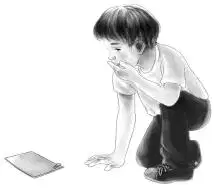
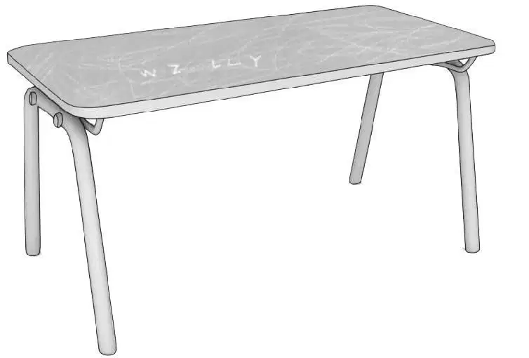
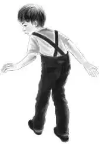
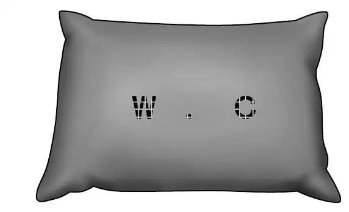

Jessie and Henry looked around the little room that Violet, Benny, and the Beach boys had found. It looked brighter and not as spooky in the afternoon light. The big rocking horse still had some of its gay colors.
“How shall we begin?” Sammy asked.
Henry said, “Suppose you two boys take the bed. Look at everything. Don’t miss a thing. Take off all the bedclothes and the mattress.”
Sammy said,“I know. Maybe there’s somethinghidden in the mattress. Come on, Jeffrey.”
“Be careful,” Jessie warned. “These things are old and some of them may break.”
Henry said, “Violet and Jessie can take the desk. Benny and I can look at the rest of the room.”
Jeffrey and Sammy pulled the bed away from the wall. They took the blanket off. They shook the pillow. They pulled the sheet back and looked at the mattress.
After a few minutes Jeffrey said sadly, “I guess there aren’t any clues here.”
“Put the things back then,” suggested Violet.
Just as Sammy was putting the pillow down he looked at it and stopped. “We didn’t see this before! Look,there are letters here on the pillowslip.”
Everybody came over to look. In tiny cross-stitch embroidery there were two letters, W and C.
“The C must stand for Carver,” Jeffrey guessed. “But what about the W?”
“Think!” said Benny. “Maybe the W stands for the little boy’s first name. It could be Walter or William.”
“Or Wally,” said Sammy. “Come on, maybe we can find something else.”
Violet and Jessie took out every drawer of the desk. They were all empty. Violet put her hand into the empty spaces for the drawers to see if she could find a secret drawer. But there was nothing to find.
Jessie was looking at the top of the desk. “Look at this—here are some letters carved on the desk with a knife. It isn’t very plain. Let’s see. Here is a W and this must be an I.”

Violet looked too. “There are two L’s and a Y,” she said.
“Willy!” everybody shouted at once.
“I bet the little boy was named Willy Carver,” said Sammy. “That goes with the initials on the pillowslip.”
Benny and Henry had looked all around the window and door but they had found nothing. They looked at the old toys and shook the red slippers. But they could not find any new clues.
Jessie said, “Come on, Violet. Let’s put the drawers back in the desk. Too bad it’s all empty.”
The big rocking horse stood in the center of the room. Sammy patted its head. He ran his hand over its mane. He touched the saddle.
“Look,” he called. “I think the saddle comes off. Help me undo this buckle.”
Everyone gathered around. Violet unfastened the buckle. Benny helped Jeffrey lift the saddle. As the boys did so, something slipped from the rocking horse’s back and fell to the floor.
Sammy crawled between the rockers and lifted the paper carefully. He handed it to Jessie. “You take it, Jessie,” he said. “I’m afraid I’ll tear it.”
“I’m almost afraid to touch it myself,” said Jessie. She took the folded paper. “It’s a little book,” she said. “Only four pages long.”
The old paper was folded twice and pinned with a rusty pin to make a little book.
Sammy said, “Somebody drew a picture of the rocking horse on the cover.”
Sure enough, there was a picture of the horse. It showed a little boy sitting on its back. Underneath was printed “My Pony”.
Jessie turned the pages carefully. “It looks as if somebody wrote a story,” she said.
“Read it,” Sammy begged.
“Yes, read it,” they all said.
The writing was faded and hard to read. Jessie read slowly.
“‘This is a true story,’”she began.“‘It is Willy’s favorite story. Once upon a time there was a little boy named Willy. Every summer he came to Grandma Carver’s house. Grandma loved Willy. She made a little room just for him up under the roof. Willy likes his little room.’”
Violet said, “Oh, Jessie, somebody must have written all that down for Willy. Maybe he liked to hear it at bedtime. Go on.”
Jessie read on.“‘Willy has special toys at Grandma’s. The most special of all is a rocking horse. It has been in Grandma’s family for years and years. Many little boys have ridden it. Now Willy loves to ride it. He calls it his pony. The End.’”
“That’s all? ” Jeffrey asked.
“Yes,” replied Jessie. “That’s the end.”

“We have two real clues,” Benny said. “We know the little boy’s name. And we know he came to visit his grandmother here. He didn’t live here all the time. But why do you suppose the room was all closed up?”
“Well, that’s still a mystery,” said Henry.
Benny looked over at the toys he and Henry had found. He looked at the ball, the toy horn, and the little train engine. Suddenly something made him stand still.
“Wait,” Benny said. “I’m getting some sort of idea. That horn reminds me of something.”
Everyone stared at Benny. Nobody laughed. Then Benny smiled. “I know! Do you remember when we made the casserole?” he asked.
“Yes,” Jessie said. “But what has that to do with this room?”
“Mrs. McGregor!” Benny said. “That’s what! She told us when she was a little girl she came to this house for a birthday party. She remembered something about a toy horn and a little boy.”
“It must have been Willy Carver’s party! ” Violet exclaimed. “If we tell her about this, maybe she can remember something more.”
“Come on,” Benny said. “Let’s show her the horn and see.”
Mrs. McGregor was in the kitchen. She dusted flour off her hands and smiled at her visitors. She listened to their story and picked up the old toy horn.
“Oh, deary me!”she said.“How well I rememberthis little tin horn! The little boy had it for a birthday present. The boy in the sailor suit.”
“That’s good!” said Benny. “That’s a good clue, Mrs. McGregor.”
Mrs. McGregor still held the little tin horn in her hands. She said, “I wish I could tell you more.”
“You have told us a lot,” said Violet. “Maybe if we knew when the party was it might help. At least we would know when the room was still open.”
“That’s right,” agreed Henry.
Mrs. McGregor thought for a minute. “Let me see. It was before we moved to the farm. I was five then. So the party must have been when I was about four years old. That would be 1910. Yes, it must have been the summer of 1910. I’m sure it was summer. I had a sunbonnet.”
“A name and a date,” Benny said.“That ought to help us. But I don’t know how yet.”

Mrs. McGregor said, “I’m afraid that’s all I can do. I wish I knew someone else who might remember the Carvers. They were important people in Greenfield, but they have all been gone a long, long time.”
“Let’s go up in the tree house and think,” Sammy said. “You come, too, Benny.”
So Benny went back with Sammy and Jeffrey. By and by Mrs. Beach saw the boys up in the tree house.
“What’s the matter? ” she asked.
“We’re thinking,” Sammy said. “But we’re not thinking.”
Jeffrey explained, “We have some clues, but now we don’t know what to do with them. We just can’t think why that room was closed off.”
“Tell me what you know so far,” Mrs. Beach suggested.
The boys told her they knew it was Willy Carver’s room and that he had visited his grandmother in the summer of 1910.
“But that’s so long ago no one can remember anything,” Jeffrey said.
“There aren’t any Carvers left in Greenfield,” Benny said.
Mrs. Beach said, “That doesn’t mean you haveto stop hunting. I have been writing a book about people who came to America in 1685. I have been able to find out a lot about them. You just have to know where to look.”
“Look?”said Benny.Then suddenly he guessed what Mrs. Beach meant. “I know!” he exclaimed. “The library!”